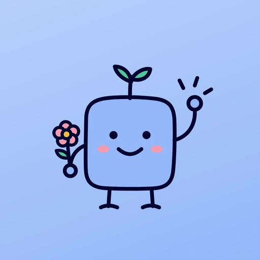

Chengel
a crossword
that teaches you
words
The clue is in your language
English
Türkçe
Deutsch
Español
A little every day
a streak
a daily reminder
Words you miss come back
until they stick
Every word grows a flower
in your garden

Chengel
A1 to C1 · works offline · free, no subscription
On the App Store